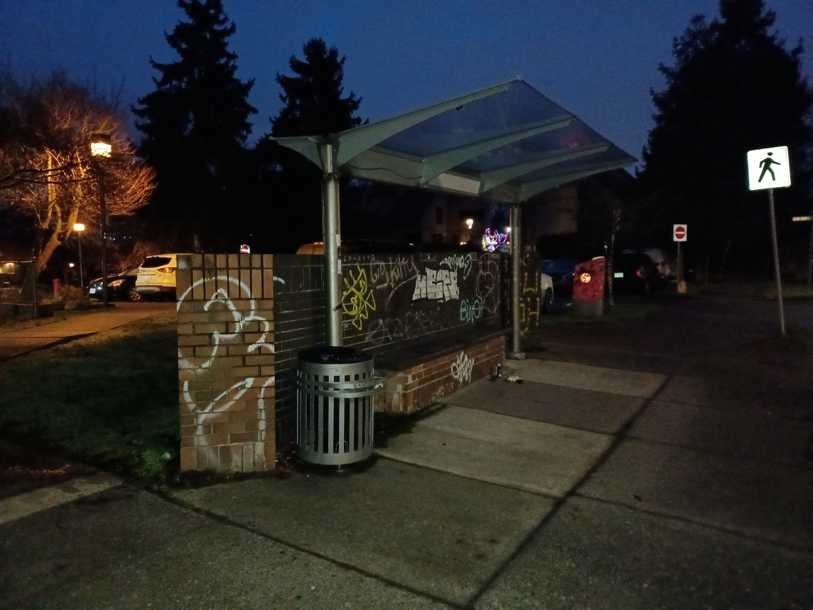
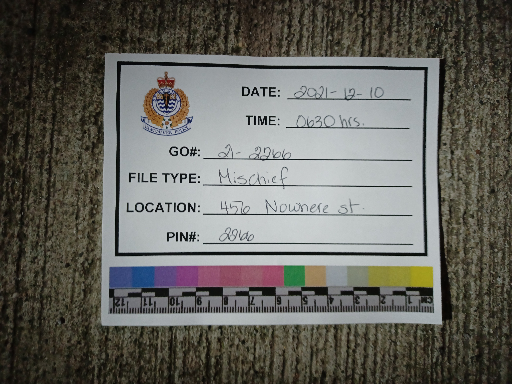
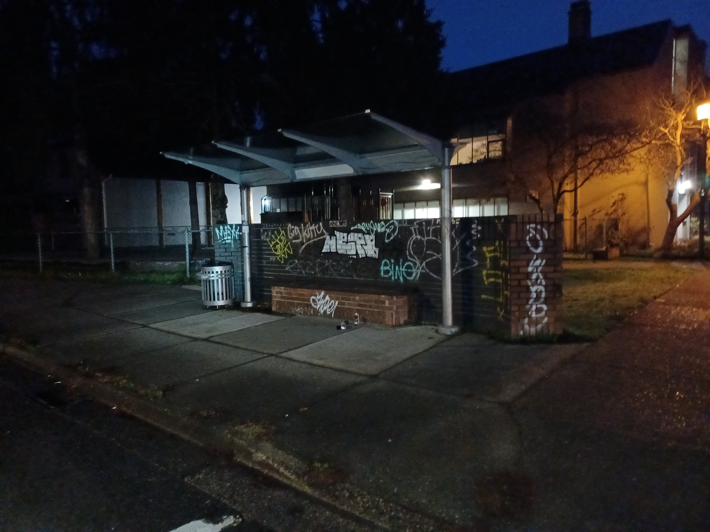
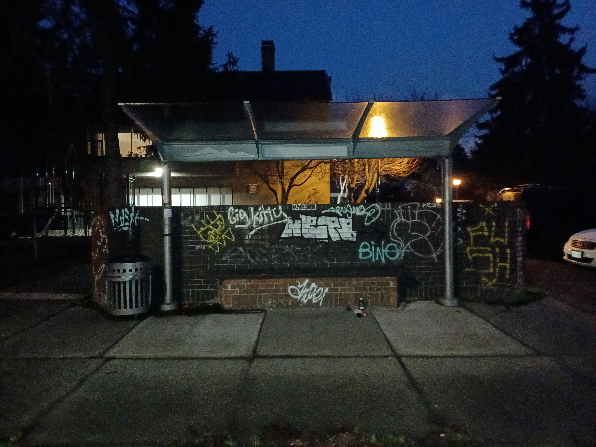
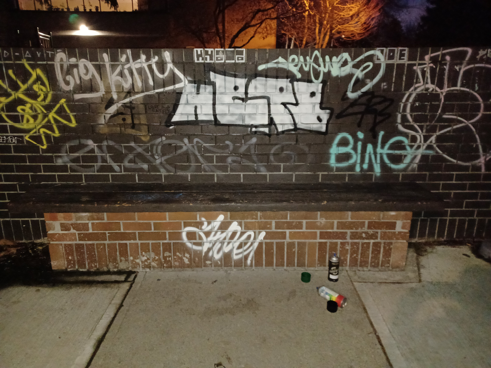
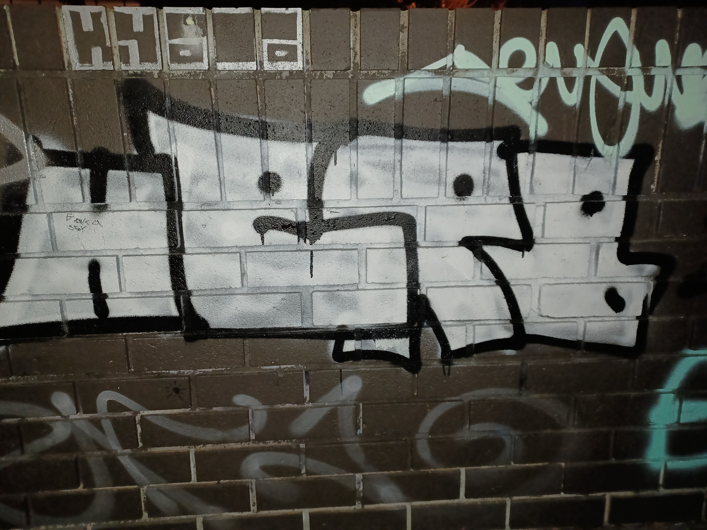
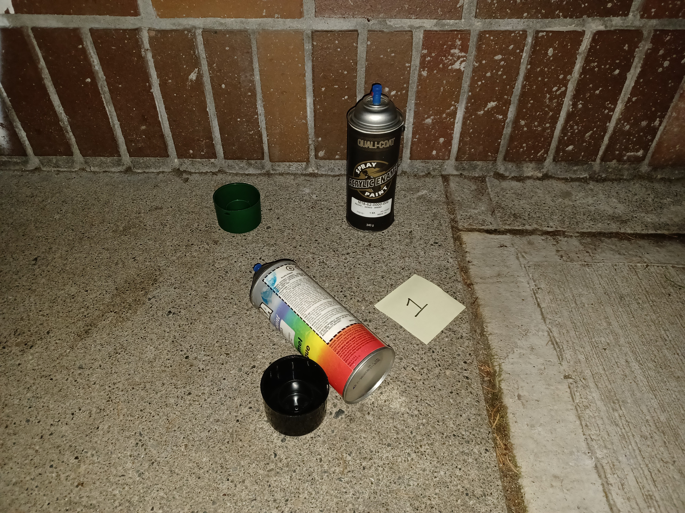
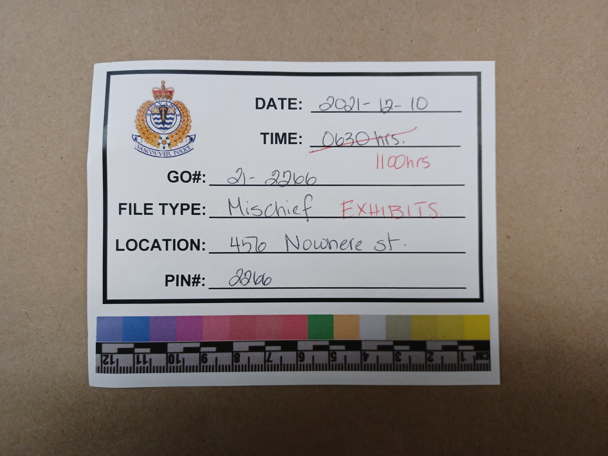
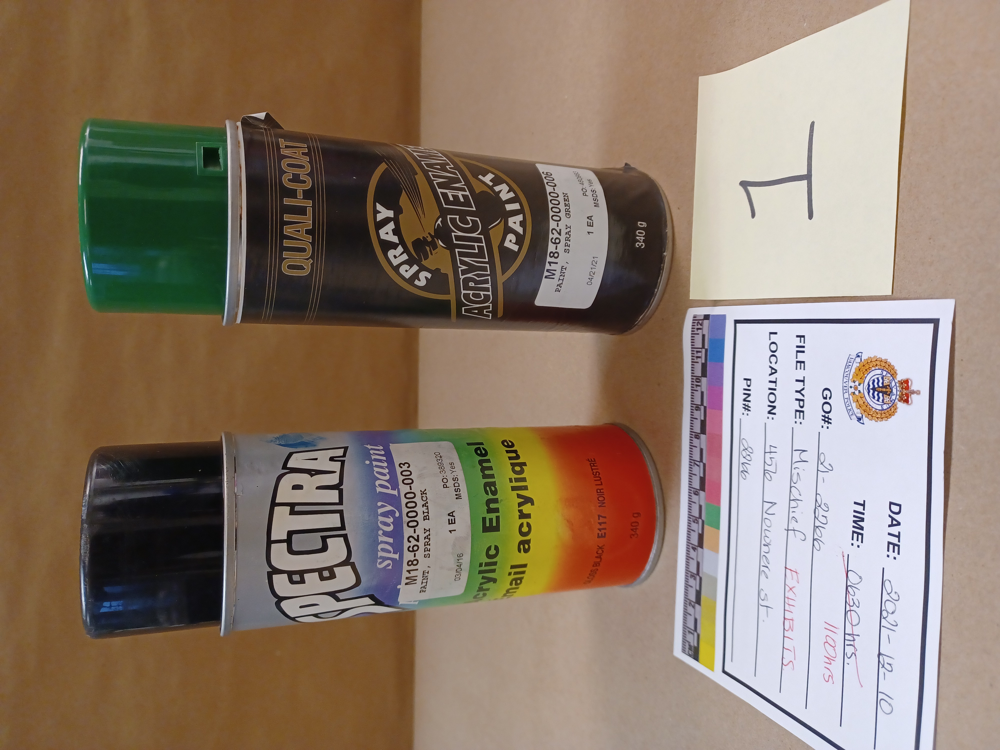

Crime Scene 2: Focus and Exposure
Learning Outcome(s):
- Describe the impact of light conditions on forensic photography.
- Identify methods to control light in common forensic photography conditions.
- Identify methods to control focus in common forensic photography conditions.
The following section will walk you through a series of forensic photographs taken at a crime scene, and will focus on the focus and exposure of the images. As you look through the images, think about how the photographer would have ensured adequate lighting at a nighttime, outdoor location.
Click on the icon to read the scenario for the crime scene below.
Scenario
Patrol members are called to a Mischief to a bus stop located at 456 Nowhere St. The complainant said they observed one suspect spray-painting the wall behind the bus stop. Upon arrival, patrol members locate a large white and black area of wet spray paint and 2 spray paint cans. The spray paint and were seized and re-photographed at the property office. Surveillance video is available. Spray paint cans and lids tagged for fingerprinting.

Click on the arrows to learn more.
Header Card

The header card is always the first image. Note that the card has been placed on the ground and that it fills the frame. The ground provides a uniform background for the card and presents a professional appearance. The cell phone flash would have provided adequate lighting for this image.
Overall

The next images are overall photographs, that document the scene in its entirety and as found by the officer. They also show the location of the bus stop on the block, as there are no identifying features.
Overall
The second overall image faces back toward the first, and is well linked. Because it is from a different angle it also helps to orient the viewer to the bus stop location.
Overall

The final scene overall is well linked to the previous images, and includes the items of interest. Note that the entire image is well focussed; this is a result of good added lighting and a stable stance with no shaking.
Overall

This overall image now focusses on the items of interest, including the graffiti and paint cans. It shows their location at the scene and in relation to each other. Because the photographer moved in closer to the items, they would need to reconsider their light sources and adjust as needed.
Midrange

This image acts as both midrange and close up, due to the size of the subject. There is no scale of suitable size so none is included. Note that the entire subject is in focus, because the photographer was sure to hold the camera on the same plane (angle) as the wall. Holding the cell phone on an angle may result in part of the graffiti being out of focus.
Close-up

This image shows the paint cans as close as possible while keeping them as found (in situ). An exhibit marker is included. These items can now be seized and relocated for better exhibit photography.
Header Card

This header card shows the viewer that the exhibits have been moved and will be photographed in a new location. This location allows the office to better control the environment, including the light. Note that the entire card is well focus and isn’t warped in any way.

Close-up
This is exhibit photography for the paint cans. The light can now be better controlled and supplemented by overhead lights as needed. Note that the cans are well exposed, because the officer held the camera at the same plane as the cans.
Close-up
This is exhibit photography for other side of the cans. Note the shiny rims on the cans; when using the flash or any sharply directed light be sure to consider reflective surfaces. When light bounces back it can ruin an image; consider angling flashlights or using more diffused or farther away light sources.